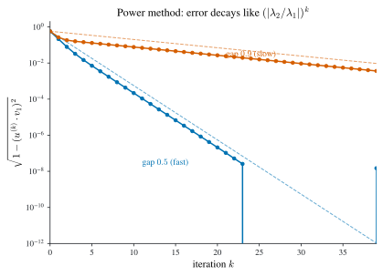
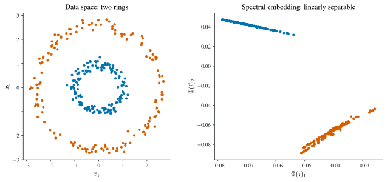

7 Eigenvalue Problems
\[ \newcommand{\R}{\mathbb{R}} \newcommand{\C}{\mathbb{C}} \newcommand{\N}{\mathbb{N}} \newcommand{\E}{\mathbb{E}} \newcommand{\eps}{\varepsilon} \newcommand{\abs}[1]{\left\lvert #1 \right\rvert} \newcommand{\norm}[1]{\left\lVert #1 \right\rVert} \newcommand{\ninf}[1]{\left\lVert #1 \right\rVert_{\infty}} \newcommand{\ntwo}[1]{\left\lVert #1 \right\rVert_{2}} \newcommand{\none}[1]{\left\lVert #1 \right\rVert_{1}} \newcommand{\inner}[2]{\left\langle #1,\, #2 \right\rangle} \newcommand{\bigO}{\mathcal{O}} \newcommand{\dd}{\mathrm{d}} \newcommand{\diff}[2]{\frac{\mathrm{d} #1}{\mathrm{d} #2}} \newcommand{\pdiff}[2]{\frac{\partial #1}{\partial #2}} \newcommand{\spec}{\rho} \newcommand{\cond}{\kappa} \newcommand{\Span}{\operatorname{span}} \newcommand{\rank}{\operatorname{rank}} \newcommand{\tr}{\operatorname{tr}} \newcommand{\diag}{\operatorname{diag}} \newcommand{\argmax}{\operatorname*{arg\,max}} \newcommand{\argmin}{\operatorname*{arg\,min}} \newcommand{\defeq}{:=} \]
Eigenvalues and eigenvectors are constructed in linear-algebra courses through the characteristic polynomial \(\det(A-\lambda I)=0\), but that route is useless numerically: root-finding on a degree-\(n\) polynomial is unstable, and a full diagonalization costs \(\bigO(n^3)\). In practice one rarely wants the whole spectrum. A handful of extreme eigenpairs already answers the questions that matter — the stationary distribution of a Markov chain, the PageRank of a web graph, the leading directions of a data cloud, a low-rank compression of a matrix, a clustering of a point set. This chapter builds the tools that extract those few eigenpairs cheaply, using nothing but repeated matrix–vector products. We start from the simplest such idea, the power method, and grow it into subspace iteration, the randomized SVD, and spectral clustering.
Throughout, \(A\in\R^{n\times n}\) has eigenvalues \(\lambda_1,\dots,\lambda_n\) with eigenvectors \(v_1,\dots,v_n\); \(\spec(A)=\max_i\abs{\lambda_i}\) is the spectral radius (Definition 5.4), and \(\sigma_1\ge\sigma_2\ge\dots\) are singular values. We freely reuse the norm and condition-number conventions of Notation.
7.1 The power method
The power method is the simplest iterative method for an eigenvector: it constructs the dominant eigenvector as the limit of a sequence of vectors. It is also the simplest matrix-free method, meaning it needs only the ability to compute \(Au\) for a given \(u\) — never the entries of \(A\). This matters because a matrix–vector product (“matvec”) is often far cheaper than forming \(A\): a sparse or “sparse-plus-low-rank” \(A\) costs \(\bigO(n)\) per matvec, so a few eigenpairs can be had in \(\bigO(n)\) time, against the \(\bigO(n^3)\) of a full diagonalization.
The idea and why it converges
Start from any vector \(x\in\R^n\) and look at the sequence \(Ax, A^2x, A^3x,\dots\). On its own this usually either blows up or collapses to zero, so it does not converge; but if we renormalize at each step, the direction settles down. Suppose \(A\) is diagonalizable with a strictly dominant eigenpair \((\lambda_1,v_1)\), meaning \[ \abs{\lambda_1}>\abs{\lambda_2}\ge\dots\ge\abs{\lambda_n}. \tag{7.1}\] (If \(A\) is real, the dominant \(\lambda_1\) must itself be real, since complex eigenvalues come in conjugate pairs of equal modulus.) Expand the start vector in the eigenbasis, \(x=\sum_{i=1}^n c_iv_i\). Then \[ A^kx=\sum_{i=1}^n c_i\lambda_i^k v_i, \qquad \lambda_1^{-k}A^kx=\sum_{i=1}^n c_i\Bigl(\tfrac{\lambda_i}{\lambda_1}\Bigr)^k v_i . \] Every ratio \(\abs{\lambda_i/\lambda_1}<1\) for \(i>1\), so those terms vanish geometrically and \(\lambda_1^{-k}A^kx\to c_1v_1\). The iteration finds \(v_1\) — provided \(c_1\ne0\), i.e. the start vector has a nonzero component along \(v_1\) (a random \(x\) satisfies this with probability one).
We do not know \(\lambda_1\), so we cannot form \(\lambda_1^{-k}A^kx\); instead we simply normalize to keep the iterate at unit length. Define \[ u^{(k)}\defeq\frac{A^kx}{\ntwo{A^kx}} . \tag{7.2}\] Factoring out the dominant term, \[ u^{(k)}=\frac{\sum_i c_i\lambda_i^k v_i}{\bigl\lVert\sum_i c_i\lambda_i^k v_i\bigr\rVert} \;\longrightarrow\; \underbrace{\frac{c_1}{\abs{c_1}}\Bigl(\frac{\lambda_1}{\abs{\lambda_1}}\Bigr)^k}_{=:z^{(k)}} \,\frac{v_1}{\ntwo{v_1}}, \] where \(\abs{z^{(k)}}=1\) (in the real case \(z^{(k)}=\pm1\)). The unit scalar \(z^{(k)}\) records an unavoidable phase/sign ambiguity — an eigenvector is only defined up to scaling.
Theorem 7.1 (Power method convergence) Let \(A\in\R^{n\times n}\) be diagonalizable with a strictly dominant eigenpair \((\lambda_1,v_1)\) as in Equation 7.1, and let \(x=\sum_i c_iv_i\) with \(c_1\ne0\). With \(u^{(k)}\) as in Equation 7.2 there exist unit scalars \(z^{(k)}\) (\(z^{(k)}=\pm1\) when \(A\) is real) such that \[ \lim_{k\to\infty}\frac{u^{(k)}}{z^{(k)}}=\frac{v_1}{\ntwo{v_1}} . \] The convergence is geometric: the error decays like \(\bigl(\abs{\lambda_2}/\abs{\lambda_1}\bigr)^k\), governed by the spectral gap \(\abs{\lambda_1}-\abs{\lambda_2}\).
Proof. The displayed limit is the computation above: \(\lambda_1^{-k}A^kx\to c_1v_1\) term by term, and normalizing removes the divergent scalar \(\lambda_1^k\) while leaving the unit phase \(z^{(k)}\). The rate is set by the largest surviving ratio, \(\abs{\lambda_2/\lambda_1}\), since that term dominates the deviation \(u^{(k)}-z^{(k)}v_1/\ntwo{v_1}\). \(\square\)
The rate claim is exactly what Figure 7.1 shows: a spectral gap ratio of \(0.5\) gains roughly one digit every two steps, while a ratio of \(0.9\) crawls. The method also works when \(A\) is not diagonalizable, as long as a strictly dominant eigenvector exists; the proof is more delicate and goes through the Jordan normal form.

Estimating the eigenvalue and stopping
To terminate we want a residual, ideally the relative residual norm \(\ntwo{Au^{(k)}-\lambda_1u^{(k)}}/\lambda_1\) — but that needs \(\lambda_1\). Given an eigenvector guess \(u\) we recover the matching eigenvalue by the Rayleigh quotient: if \(Au=\lambda u\) then \(u\cdot(Au)=\lambda\ntwo{u}^2\), so \[ \lambda=\frac{u^\top Au}{\ntwo{u}^2}, \qquad\text{and for unit }u,\quad \lambda=u^\top Au . \tag{7.3}\] This furnishes the running estimate \(\lambda_1^{(k)}=u^{(k)}\cdot(Au^{(k)})\) and the computable stopping test \(\ntwo{Au^{(k)}-\lambda_1^{(k)}u^{(k)}}/\lambda_1^{(k)}\le\eps\).
Given a start vector \(x^{(0)}\in\R^n\), a matvec routine for \(A\), a maximum count \(m\), and a tolerance \(\eps\). For \(k=0,1,\dots,m\):
- Normalize: \(u^{(k)}\leftarrow x^{(k)}/\ntwo{x^{(k)}}\).
- Matvec: \(x^{(k+1)}\leftarrow Au^{(k)}\).
- Rayleigh-quotient estimate: \(\lambda_1^{(k)}\leftarrow u^{(k)}\cdot x^{(k+1)}\).
- If \(\ntwo{x^{(k+1)}-\lambda_1^{(k)}u^{(k)}}/\lambda_1^{(k)}\le\eps\), break.
Return \((\lambda_1^{(k)},u^{(k)})\). Each step is one matvec plus \(\bigO(n)\) work.
The power method generalizes, from one dominant eigenvector to the \(k\) most dominant ones, as subspace iteration (Section 7.6). First we spend three sections on where the dominant eigenvector of a specific matrix is exactly the quantity of interest.
7.2 Application: Markov chains
Consider a system with \(n\) states \(1,\dots,n\) making random transitions at discrete times. For each state \(j\) we are given a column of probabilities \(p_j=(p_{1j},\dots,p_{nj})^\top\), where \(p_{ij}\) is the probability of moving to state \(i\) next, given that we are in state \(j\) now — transitions depend only on the current state (the Markov property). For these to be probabilities we need \(p_{ij}\ge0\) and \(\sum_i p_{ij}=1\) for every \(j\); the latter reads \(\mathbf 1^\top p_j=1\) with \(\mathbf 1\) the all-ones vector.
Definition 7.1 (Column-stochastic matrix) \(P=(p_{ij})\) is (column) stochastic if \(P\ge0\) entrywise and \(P^\top\mathbf 1=\mathbf 1\) (every column sums to \(1\)). It is positive, written \(P>0\), if \(p_{ij}>0\) for all \(i,j\).
A vector \(\pi\in\R^n\) is a probability distribution over the states if \(\pi\ge0\) and \(\mathbf 1^\top\pi=1\). The point of the stochastic matrix is that it advances distributions in time.
Proposition 7.1 (Distributions evolve by \(P\)) If \(\pi\) is the distribution of the state \(X_t\) at time \(t\), then \(P\pi\) is its distribution at time \(t+1\).
Proof. Conditioning on the current state and using the Markov property, \[ \Pr(X_{t+1}=i)=\sum_{j=1}^n\Pr(X_{t+1}=i\mid X_t=j)\,\Pr(X_t=j)=\sum_{j=1}^n p_{ij}\pi_j=[P\pi]_i . \] Moreover \(P\) preserves distributions: \(\mathbf 1^\top(P\pi)=(P^\top\mathbf 1)^\top\pi=\mathbf 1^\top\pi=1\), and \(\pi\ge0\Rightarrow P\pi\ge0\). \(\square\)
So the evolution of the state distribution is just repeated application of \(P\), and we care about the long-run limit \[ \pi_\infty=\lim_{k\to\infty}P^k\pi . \] If this limit exists it is again a probability vector, and passing to the limit in \(\pi_{k+1}=P\pi_k\) shows it is a fixed point, \[ \pi_\infty=P\pi_\infty , \tag{7.4}\] the equilibrium or invariant distribution. Two observations connect this to Section 7.1. First, Equation 7.4 says \(\pi_\infty\) is an eigenvector of \(P\) with eigenvalue \(1\). Second, \(P^k\pi\) is precisely the (already-normalized) power-method sequence for \(P\). So \(\pi_\infty\) is the dominant eigenvector of \(P\) — if the power method’s hypotheses hold. They do, under positivity.
Theorem 7.2 (Perron–Frobenius) Let \(P\) be a positive stochastic matrix. Then \(P\) has a strictly dominant eigenvalue equal to \(1\), with an eigenvector that can be scaled to a probability distribution. Hence the power method converges to the invariant distribution \(\pi_\infty\).
We take Theorem 7.2 as given — its proof (positivity forces a unique largest-modulus eigenvalue with a positive eigenvector) belongs to a matrix-analysis course; refined versions weaken positivity to irreducibility and aperiodicity.
7.3 Sub-application: PageRank
The web is a directed graph: pages \(1,\dots,n\) and edges \(E\), where \((i,j)\in E\) means page \(i\) links to page \(j\). Equivalently it is an adjacency matrix \(A\) with \(A_{ij}=1\) if \((i,j)\in E\) and \(0\) otherwise. We want to rank pages by a centrality score. Merely counting inbound links is unsatisfactory — a link from an important page should count for more than a link from an obscure one — so PageRank uses an eigenvector-centrality score: a page is important if important pages link to it, a self-referential definition that an eigenvector resolves.
From adjacency to a Markov chain. This is an instance of a general recipe for turning a nonnegative matrix into a stochastic one: normalize each column to sum to one. Assuming every page has at least one inbound link (drop any that do not), define \(\tilde P\) by \[ \tilde P^\top=\diag(A\mathbf 1)^{-1}A, \qquad \tilde P_{ji}=\begin{cases}\dfrac{1}{\deg^-(i)}, & (i,j)\in E,\\[2pt] 0,&(i,j)\notin E,\end{cases} \tag{7.5}\] where \(\deg^-(i)\) is the outdegree of page \(i\). The random-walk reading: from the current page, click a uniformly random outgoing link.
Damping. Plain \(\tilde P\) can make the power method converge very slowly, and dangling structure can spoil the hypotheses. The fix is a damping factor \(\tau\in(0,1)\): with probability \(\tau\) follow a random link, and with probability \(1-\tau\) jump to a page chosen uniformly at random from all \(n\). This defines the new chain \[ P=\tau\tilde P+(1-\tau)\tfrac1n\mathbf 1\mathbf 1^\top , \tag{7.6}\] where \(\mathbf 1\mathbf 1^\top\) is the all-ones matrix. Now \(P\) is stochastic and positive, so by Theorem 7.2 it has a dominant eigenvector \(\pi^{\star}\) with eigenvalue \(1\); scaled to \(\pi^{\star}\ge0\), \(\mathbf 1^\top\pi^{\star}=1\), the entry \(\pi^{\star}_i\) is the PageRank of page \(i\) — the long-run fraction of time the random surfer spends there.
PageRank is the power method applied to \(P\) of Equation 7.6, only simpler: because the dominant eigenvalue is exactly \(1\), no renormalization is needed. Start from any distribution \(\pi^{(0)}\) and iterate \(\pi^{(k+1)}=P\pi^{(k)}\). Each \(\pi^{(k)}\) stays a probability distribution and \(\pi^{(k)}\to\pi^{\star}\). Each step is one matvec by \(P\), and \(P\) never has to be formed densely: the damping term acts as \(\tfrac{1-\tau}{n}(\mathbf 1^\top\pi^{(k)})\mathbf 1=\tfrac{1-\tau}{n}\mathbf 1\), so the matvec costs \(\bigO(\lvert E\rvert)\).
7.4 Linear-algebra review
The remaining applications lean on standard decompositions, collected here for reference; all were established in Chapter 4 and a linear-algebra prerequisite, so we only fix notation.
- Diagonalization. \(A=P\Lambda P^{-1}\) with \(\Lambda=\diag(\lambda_1,\dots,\lambda_n)\) when \(A\) has a full eigenbasis (the columns of \(P\)).
- Spectral theorem. A symmetric \(A=A^\top\) diagonalizes orthogonally: \(A=Q\Lambda Q^\top\) with \(Q^\top Q=I\) and real \(\lambda_i\). Equivalently \(A=\sum_i\lambda_iq_iq_i^\top\), a sum of rank-one pieces.
- Orthogonal projector. For \(Q\in\R^{n\times k}\) with orthonormal columns (\(Q^\top Q=I_k\)), \(P_Q=QQ^\top\) is the orthogonal projection onto \(\Span(Q)=\operatorname{col}(Q)\); it is symmetric and idempotent, \(P_Q^2=P_Q\), with eigenvalues in \(\{0,1\}\).
- SVD. Every \(A\in\R^{m\times n}\) factors as \(A=U\Sigma V^\top\) with orthogonal \(U,V\) and \(\Sigma=\diag(\sigma_1,\dots)\), \(\sigma_1\ge\sigma_2\ge\dots\ge0\). The compact SVD keeps the \(r=\rank(A)\) positive singular values, \(A=\sum_{i=1}^r\sigma_iu_iv_i^\top\); the truncated (rank-\(k\)) SVD keeps the top \(k\). The SVD is the spectral theorem in disguise: \(A^\top A=V\Sigma^2V^\top\) and \(AA^\top=U\Sigma^2U^\top\), so left/right singular vectors are eigenvectors of \(AA^\top\), \(A^\top A\), with \(\sigma_i^2\) the eigenvalues.
The Eckart–Young–Mirsky theorem — the truncated SVD is the best rank-\(k\) approximation in Frobenius norm — is the workhorse behind PCA and the randomized SVD below.
7.5 Principal component analysis (PCA)
Given data points \(x_j\in\R^m\), \(j=1,\dots,n\) (dimension \(m\), count \(n\)), PCA seeks a \(k\)-dimensional subspace that captures the data as well as possible — in statistics, that explains as much variance as possible. Assume the data is de-meaned, \(\frac1n\sum_i x_i=0\) (always arrangeable by subtracting the mean), and collect it into the data matrix \(X=[x_1,\dots,x_n]\in\R^{m\times n}\), whose empirical covariance is \(\frac1n XX^\top\).
The optimization problem. A subspace is described by an orthonormal basis \(Q=[q_1,\dots,q_k]\) with \(Q^\top Q=I_k\) (such \(Q\) is said to have orthonormal columns); \(P_Q=QQ^\top\) projects onto it. We minimize the total squared distance of the data from the subspace, \[ f(Q)\defeq\sum_{i=1}^n\ntwo{x_i-P_Qx_i}^2 . \tag{7.7}\] Since \((I-QQ^\top)x_i\) is the \(i\)-th column of \((I-QQ^\top)X\), and the squared Frobenius norm sums the squared column norms, \[ f(Q)=\bigl\lVert X-QQ^\top X\bigr\rVert_{\mathrm F}^2 . \]
The solution. Let \(X=\sum_{i=1}^r\sigma_iu_iv_i^\top\) be the compact SVD and \(\tilde X=\sum_{i=1}^k\sigma_iu_iv_i^\top=\tilde U\tilde\Sigma\tilde V^\top\) its rank-\(k\) truncation, \(\tilde U=[u_1,\dots,u_k]\). Because \(\rank(QQ^\top X)\le k\), Eckart–Young says no choice of \(Q\) can push \(QQ^\top X\) closer to \(X\) than \(\tilde X\) does; and the choice \(Q=\tilde U\) attains it, since \[ QQ^\top X=\tilde U\tilde U^\top\sum_{i=1}^r\sigma_iu_iv_i^\top=\sum_{i=1}^k\sigma_iu_iv_i^\top=\tilde X , \] using \(\tilde U^\top u_i=e_i\) for \(i\le k\) and \(\tilde U^\top u_i=0\) for \(i>k\). Thus the optimal subspace is the span of the top \(k\) left singular vectors of the de-meaned \(X\) — equivalently, the span of the dominant \(k\) eigenvectors of the covariance \(\frac1n XX^\top\).
For a data point \(x_j\), the coordinate \(u_i\cdot x_j\) along the \(i\)-th singular vector is its \(i\)-th principal component; the \(j\)-th column of \(Q^\top X\in\R^{k\times n}\) collects the first \(k\) principal components of \(x_j\). Reading \(Y=Q^\top X\) as a compression \(\R^m\to\R^k\), we approximately recover the data by \(\tilde X=QY=QQ^\top X\); because \(Q\) minimized Equation 7.7, this recovery is as faithful as any \(k\)-dimensional linear compression can be.
7.6 Subspace iteration
To capture a \(k\)-dimensional dominant subspace — as PCA and clustering demand — we run the power method on a whole block of \(k\) vectors at once. This is subspace iteration.
Basic algorithm
Let \(A\in\R^{n\times n}\) be diagonalizable with eigenvalues ordered by modulus and a spectral gap after the \(k\)-th, \[ \abs{\lambda_1}\ge\dots\ge\abs{\lambda_k}>\abs{\lambda_{k+1}}\ge\dots\ge\abs{\lambda_n}, \tag{7.8}\] with eigenvectors \(u_1,\dots,u_n\) and \(U=[u_1,\dots,u_k]\in\R^{n\times k}\) (not necessarily orthonormal, since \(A\) need not be symmetric). We want the subspace \(\Span(U)\). Take a block initial guess \(W=[w_1,\dots,w_k]\in\R^{n\times k}\).
Theorem 7.3 (Subspace iteration convergence) For a generic initial guess \(W\in\R^{n\times k}\) there is a sequence of invertible matrices \(C_l\in\R^{k\times k}\) with \[ \lim_{l\to\infty}A^lWC_l=U . \] Consequently \(\Span(A^lW)\to\Span(U)\) as a subspace, even though \(A^lW\) itself does not converge.
The genericity condition and the \(C_l\) are exhibited in the proof (Section 7.6.2). Because literally forming \(A^lW\) overflows or underflows, the practical algorithm reorthonormalizes the block each step — the block analogue of the power method’s normalization. Writing \(V\) for an orthonormal basis of \(\Span(W)\) (from Gram–Schmidt, a rectangular QR factorization \(W=VR\), or Matlab’s orth):
Given a generic \(W\in\R^{n\times k}\), matvec access to \(A\), and a count \(m\). Let \(V\) have orthonormal columns spanning \(\Span(W)\). For \(j=0,1,\dots,m\):
- \(W\leftarrow AV\) (this is \(k\) matvecs, one per column).
- Reorthonormalize: let \(V\) have orthonormal columns spanning \(\Span(W)\).
Return \(V\). For \(m\) large, \(\Span(V)\approx\Span(U)\).
Each iteration costs (1) \(k\) matvecs and (2) an \(\bigO(nk^2)\) orthonormalization (from counting Gram–Schmidt operations). If \(A\) is sparse with \(\bigO(n)\) nonzeros the matvecs cost \(\bigO(nk)\); even dense, \(\bigO(n^2k)\) — against \(\bigO(n^3)\) for a full diagonalization when \(k\ll n\).
Convergence proof
Proof. Let \(P=[u_1,\dots,u_n]=[\,U\mid U'\,]\) be the full eigenvector matrix (here \(U'=[u_{k+1},\dots,u_n]\)), so \(A=P\Lambda P^{-1}\) with \[ \Lambda=\begin{pmatrix}\Lambda_1&0\\0&\Lambda_2\end{pmatrix}, \qquad \Lambda_1=\diag(\lambda_1,\dots,\lambda_k),\quad\Lambda_2=\diag(\lambda_{k+1},\dots,\lambda_n). \] The gap Equation 7.8 makes \(\Lambda_1\) invertible. Set \(Y=P^{-1}W=\binom{Y_1}{Y_2}\) with \(Y_1\) being \(k\times k\); the genericity condition is that \(Y_1\) is invertible. Choose \(C_l=Y_1^{-1}\Lambda_1^{-l}\) (invertible). Then \[ A^lWC_l=P\Lambda^lY C_l =P\begin{pmatrix}\Lambda_1^lY_1\\\Lambda_2^lY_2\end{pmatrix}Y_1^{-1}\Lambda_1^{-l} =P\begin{pmatrix}I_k\\\Lambda_2^lY_2Y_1^{-1}\Lambda_1^{-l}\end{pmatrix}. \] Put \(B=Y_2Y_1^{-1}\). The lower block \(M_l=\Lambda_2^lB\Lambda_1^{-l}\) has entries \[ (M_l)_{ij}=\Bigl(\tfrac{\lambda_{k+i}}{\lambda_j}\Bigr)^l B_{ij}, \qquad \Bigl\lvert\tfrac{\lambda_{k+i}}{\lambda_j}\Bigr\rvert\le\frac{\abs{\lambda_{k+1}}}{\abs{\lambda_k}}<1 , \] so \(M_l\to0\) geometrically. Hence \(A^lWC_l\to P\binom{I_k}{0}=[\,U\mid U'\,]\binom{I_k}{0}=U\). \(\square\)
Distance between subspaces
To stop the iteration we must measure how far apart two successive subspaces are. The clean device is the Frobenius distance between their orthogonal projectors. Let \(\Span(V)\) and \(\Span(\tilde V)\) have orthonormal bases (\(V^\top V=\tilde V^\top\tilde V=I_k\)), with projectors \(P=VV^\top\) and \(Q=\tilde V\tilde V^\top\). We compute \(\norm{P-Q}_{\mathrm F}^2\) using two trace facts (with \(\tr B=\sum_iB_{ii}\)): Fact 1, \(\norm{A}_{\mathrm F}^2=\tr[A^\top A]=\tr[AA^\top]\); and Fact 2, the cyclic property \(\tr[BC]=\tr[CB]\).
Theorem 7.4 (Projector distance between subspaces) If \(V,\tilde V\in\R^{n\times k}\) have orthonormal columns with projectors \(P=VV^\top\), \(Q=\tilde V\tilde V^\top\), then \[ \norm{P-Q}_{\mathrm F}^2=2\Bigl(k-\norm{V^\top\tilde V}_{\mathrm F}^2\Bigr), \qquad \frac{\norm{P-Q}_{\mathrm F}}{\norm{P}_{\mathrm F}} =\sqrt2\,\sqrt{1-k^{-1}\norm{V^\top\tilde V}_{\mathrm F}^2}. \]
Proof. By Fact 1, \(\norm{P-Q}_{\mathrm F}^2=\tr[(P-Q)^2]=\tr[PP]-\tr[QP]-\tr[PQ]+\tr[QQ]\). Projectors satisfy \(PP=P\), \(QQ=Q\), and \(\tr[QP]=\tr[PQ]\) by Fact 2, so \[ \norm{P-Q}_{\mathrm F}^2=\tr[P]+\tr[Q]-2\tr[PQ] =\tr[VV^\top]+\tr[\tilde V\tilde V^\top]-2\tr[VV^\top\tilde V\tilde V^\top]. \] Cycling each trace (Fact 2) turns these into \(\tr[V^\top V]=\tr[I_k]=k\), likewise \(k\), and \(2\tr[(V^\top\tilde V)^\top(V^\top\tilde V)]=2\norm{V^\top\tilde V}_{\mathrm F}^2\), giving the first identity. For the second, \(\norm{P}_{\mathrm F}^2=\tr[VV^\top VV^\top]=\tr[I_k]=k\). \(\square\)
The payoff is efficiency: the distance is read off the small \(k\times k\) matrix \(V^\top\tilde V\) in \(\bigO(nk^2)\), never forming the \(n\times n\) projectors \(P,Q\) (which would cost \(\bigO(n^2k)\)).
Full pseudocode
Comparing the current basis \(V\) against the next \(\tilde V\) by this relative distance gives the missing stopping test.
Given a generic \(W\in\R^{n\times k}\), matvec access to \(A\), a count \(m\), and tolerance \(\eps\). Let \(V\) have orthonormal columns spanning \(\Span(W)\). For \(j=0,1,\dots,m\):
- \(W\leftarrow AV\).
- Let \(\tilde V\) have orthonormal columns spanning \(\Span(W)\).
- \(\delta\leftarrow\sqrt2\,\sqrt{1-k^{-1}\norm{V^\top\tilde V}_{\mathrm F}^2}\).
- \(V\leftarrow\tilde V\).
- If \(\delta<\eps\), break.
Return \(V\), whose span approximates \(\Span(U)\).
Recovering eigenpairs via Rayleigh–Ritz
Subspace iteration returns a basis of the dominant subspace, not eigenpairs. Assume now \(A\) is symmetric, so by the spectral theorem \(U=[u_1,\dots,u_k]\) can be taken orthonormal, and suppose the iteration has converged so that the returned \(V\in\R^{n\times k}\) satisfies \(\Span(V)=\Span(U)\) with \(V^\top V=I_k\). Because of scaling freedom and possible repeated eigenvalues we cannot hope to recover \(U\) itself; we settle for the exact dominant eigenvalues \(\lambda_1,\dots,\lambda_k\) and some orthonormal eigenvectors \(q_1,\dots,q_k\) with \(Aq_j=\lambda_jq_j\). Packaged as a matrix equation, we seek \(Q=[q_1,\dots,q_k]\) with orthonormal columns and \(AQ=Q\Lambda_1\), where \(\Lambda_1=\diag(\lambda_1,\dots,\lambda_k)\).
Definition 7.2 (Rayleigh–Ritz procedure) Given an orthonormal basis \(V\in\R^{n\times k}\) of an (approximately) invariant subspace of a symmetric \(A\):
- Form the \(k\times k\) symmetric matrix \(\bar A=V^\top AV\) (the Rayleigh quotient of the block).
- Diagonalize it completely, \(\bar A=\tilde U\bar\Lambda\tilde U^\top\), with \(\tilde U\) orthogonal (\(k\times k\)) and \(\bar\Lambda\) diagonal, entries ordered by decreasing modulus. This costs \(\bigO(k^3)\), independent of \(n\).
- Recover the Ritz values \(\bar\Lambda\) and Ritz vectors \(Q=V\tilde U\).
Both outputs are exact when \(\Span(V)=\Span(U)\).
Theorem 7.5 (Exactness of Rayleigh–Ritz) If \(\Span(V)=\Span(U)\) for the dominant orthonormal eigenblock \(U\) of a symmetric \(A\), then the Rayleigh–Ritz procedure yields \(\bar\Lambda=\Lambda_1\) and \(Q=V\tilde U\) satisfies \(AQ=Q\Lambda_1\).
Proof. Since \(\Span(V)=\Span(U)\) and both have orthonormal columns, \(V=UO\) for the \(k\times k\) matrix \(O=U^\top V\): indeed \(UO=UU^\top V=P_UV=V\), as \(P_U=UU^\top\) projects onto \(\Span(U)\supseteq\Span(V)\). And \(O\) is orthogonal, \(O^\top O=(U^\top V)^\top(U^\top V)=V^\top P_UV=V^\top V=I_k\). Now \[ \bar A=V^\top AV=(UO)^\top A(UO)=O^\top(U^\top AU)\,O=O^\top\Lambda_1 O , \] using \(AU=U\Lambda_1\) and \(U^\top U=I_k\). Since \(O^\top\) is orthogonal, \(\bar A=O^\top\Lambda_1O\) is a diagonalization of \(\bar A\) with eigenvalues \(\lambda_1,\dots,\lambda_k\); as the Ritz values \(\bar\Lambda\) are ordered the same way, \(\bar\Lambda=\Lambda_1\), proving the first claim. For the second, using \(V=UO\), \(AU=U\Lambda_1\), then inserting \(I_k=OO^\top\) and \(\bar A=\tilde U\bar\Lambda\tilde U^\top=O^\top\Lambda_1O\), \[ AQ=AV\tilde U=A(UO)\tilde U=U\Lambda_1O\tilde U =UO(O^\top\Lambda_1O)\tilde U=UO\bar A\tilde U =UO(\tilde U\bar\Lambda\tilde U^\top)\tilde U=UO\tilde U\bar\Lambda=(V\tilde U)\Lambda_1=Q\Lambda_1 , \] where the penultimate step used \(\tilde U^\top\tilde U=I_k\) and \(\bar\Lambda=\Lambda_1\). \(\square\)
7.7 Randomized SVD
Subspace iteration plus Rayleigh–Ritz computes a truncated SVD: for \(A\in\R^{m\times n}\) (\(m\ge n\)) the top \(k\) left singular vectors are the dominant \(k\) eigenvectors of \(AA^\top\) (eigenvalues \(\sigma_i^2\)), and the right ones are the dominant \(k\) eigenvectors of \(A^\top A\). But if the gap \(\sigma_k-\sigma_{k+1}\) is small, subspace iteration converges slowly. The randomized SVD sidesteps iteration entirely, paying instead a controlled approximation error tied to how fast the singular values decay.
Toy problem: the exact rank-\(k\) case
Suppose \(\rank(A)=k\) exactly. Let \(Z=[z_1,\dots,z_k]\in\R^{n\times k}\) have random columns. The vectors \(Az_1,\dots,Az_k\) lie in \(\operatorname{range}(A)\) and, with probability one, are independent — so they span it: \[ \Span(AZ)=\operatorname{range}(A)=\Span(U), \] the last equality because \(A=\sum_{i=1}^k\sigma_iu_iv_i^\top\) terminates at \(k\), giving \(\operatorname{range}(A)=\Span(u_1,\dots,u_k)\). So a single random matvec block reveals the range — no iteration. Let \(X=\operatorname{orth}(AZ)\) (orthonormal columns spanning \(\Span(U)\)). Applying Rayleigh–Ritz to \(AA^\top\) with the subspace \(\Span(X)\) recovers \(U\) and \(\Sigma\): form the \(k\times k\) matrix \(B=X^\top AA^\top X=(X^\top A)(X^\top A)^\top\), diagonalize \(B=\tilde U\bar\Lambda\tilde U^\top\), and set \(U=X\tilde U\), \(\Sigma=\sqrt{\bar\Lambda}\). (Here \(X\) plays the role of \(V\) from subspace iteration; the letter \(V\) is reserved for the right singular vectors.)
There is a slicker route that gets \(U\), \(\Sigma\), and \(V\) in one shot. With a second random \(W=[w_1,\dots,w_k]\in\R^{m\times k}\), let \(Y=\operatorname{orth}(A^\top W)\) span the row space. Since \(XX^\top A=A\) (as \(XX^\top\) projects onto \(\operatorname{range}(A)\)) and \(AYY^\top=A\) likewise, \[ A=XX^\top A=XX^\top(AYY^\top)=X(X^\top AY)Y^\top . \] Form the small \(\bar A=X^\top AY\in\R^{k\times k}\) (not symmetric) and take its full SVD \(\bar A=\tilde U\tilde\Sigma\tilde V^\top\); then \(U=X\tilde U\), \(V=Y\tilde V\), \(\Sigma=\tilde\Sigma\) give the SVD of \(A\). This is consistent with the two-sided recipe: \(\bar A\bar A^\top=X^\top AA^\top X=B\) and \(\bar A^\top\bar A=Y^\top A^\top AY\), so the left/right singular vectors of the tiny \(\bar A\) are exactly the eigenvectors that Rayleigh–Ritz would produce.
Beyond rank \(k\)
Real matrices are seldom exactly rank \(k\). We oversample: draw \(\tilde k\ge k\) random vectors \(Z\in\R^{n\times\tilde k}\), \(W\in\R^{m\times\tilde k}\), so that \(\Span(AZ)\) and \(\Span(A^\top W)\) merely approximately contain the ranges of \(A\) and \(A^\top\). With \(X=\operatorname{orth}(AZ)\) and \(Y=\operatorname{orth}(A^\top W)\), \[ A\approx XX^\top A\approx XX^\top AYY^\top=X\bar A Y^\top, \qquad \bar A=X^\top AY\in\R^{\tilde k\times\tilde k}. \] The error is quantified by the following, which we state without proof (it is beyond the course; the one-line intuition is that oversampling makes \(\Span(AZ)\) capture the dominant singular directions with high probability, and the leftover is exactly the tail energy \(\sum_{i>k}\sigma_i^2\)).
Theorem 7.6 (Randomized range approximation) Let \(\delta>0\), let \(A\in\R^{m\times n}\), and let \(X=\operatorname{orth}(AZ)\) where \(Z\in\R^{n\times\tilde k}\) has i.i.d. standard-normal entries. There is a universal constant \(C\) such that if \(\tilde k\ge C\,(k+\log(1/\delta))\), then with probability at least \(1-\delta\), \[ \bigl\lVert (I-XX^\top)A\bigr\rVert_{\mathrm F}^2\le 2\sum_{i>k}\sigma_i^2 , \] with \(\sigma_i\) the singular values of \(A\). (The source prints the left-hand side as \(\lVert XX^\top A\rVert_{\mathrm F}\), the projector onto the range rather than the residual, and unsquared; that is a typo — such a quantity is \(\approx\lVert A\rVert_{\mathrm F}\), not small — so we state the standard residual bound.)
So if \(A\) has numerical rank \(k\) — meaning \(\sum_{i>k}\sigma_i^2\) is negligible — then oversampling to a small multiple of \(k\) makes the randomized SVD accurate with high probability.
Given matvec access to \(A\) and \(A^\top\), target rank \(k\), and oversampling \(\tilde k\ge k\):
- Draw \(Z\in\R^{n\times\tilde k}\), \(W\in\R^{m\times\tilde k}\) with i.i.d. standard-normal entries.
- Form \(AZ\) and \(A^\top W\); orthonormalize their columns to get \(X\) and \(Y\).
- Form \(\bar A=X^\top AY\in\R^{\tilde k\times\tilde k}\) (not symmetric) and take its full SVD \(\bar A=\tilde U\tilde\Sigma\tilde V^\top\).
- Recover \(\hat U=[X\tilde U]_{:,1:k}\), \(\hat V=[Y\tilde V]_{:,1:k}\), \(\hat\Sigma=[\tilde\Sigma]_{1:k,1:k}\).
Then \(A\approx\hat U\hat\Sigma\hat V^\top\) is an approximate rank-\(k\) truncated SVD.
7.8 Spectral clustering
The last application partitions a data set into clusters that need not be linearly separable — two concentric rings, say — where \(k\)-means on the raw coordinates fails. The trick is to re-embed the data using eigenvectors of a graph Laplacian, after which the clusters do separate (Figure 7.2).
A weighted graph from data
Given \(x_1,\dots,x_n\in\R^m\), build a weighted graph whose edge weights measure similarity. A similarity kernel is a symmetric \(K(x,y)=K(y,x)\ge0\); the standard choice is the Gaussian kernel with width \(\sigma>0\), \[ K(x,y)=e^{-\frac{1}{2\sigma^2}\ntwo{x-y}^2}. \tag{7.9}\] It yields a symmetric weighted adjacency matrix \(A_{ij}=K(x_i,x_j)\), large when points are close.
Graph Laplacians
Definition 7.3 (Graph Laplacian) For a weighted adjacency \(A\) with degree matrix \(D=\diag(A\mathbf 1)\) (so \(D_{ii}=\sum_j A_{ij}\)), the graph Laplacian is \(L=D-A\), i.e. \(L_{ij}=\delta_{ij}D_{ii}-A_{ij}\). The symmetric normalized Laplacian is \[ \hat L=D^{-1/2}LD^{-1/2}=I-D^{-1/2}AD^{-1/2}, \qquad \hat L_{ij}=\delta_{ij}-\frac{A_{ij}}{\sqrt{D_{ii}D_{jj}}}. \tag{7.10}\]
The Laplacian’s structure explains its role. Its intuition comes from the left-normalized variant \(\tilde L=D^{-1}L=I-D^{-1}A\): for any \(v\), \[ [\tilde Lv]_i=v_i-\frac{\sum_j A_{ij}v_j}{\sum_j A_{ij}}, \] the difference between \(v_i\) and a weighted average of its neighbors — a discrete “smoothness” operator, small on functions that vary slowly across the graph. Three facts pin down its spectrum: (1) \(L\mathbf 1=0\), so the constant vector is a null eigenvector; (2) \(L\) is diagonally dominant with nonnegative diagonal; hence (3) \(L\) is positive semidefinite (all eigenvalues \(\ge0\)). For the normalized \(\hat L\) one more fact holds.
Proposition 7.2 (Spectrum of the normalized Laplacian) The eigenvalues of \(\hat L=D^{-1/2}LD^{-1/2}\) all lie in \([0,2]\).
Proof. \(\hat L\) is positive semidefinite (congruent to the PSD \(L\) via \(\hat L=D^{-1/2}LD^{-1/2}\)), so its eigenvalues are \(\ge0\). For the upper bound, \(\hat L\) is similar to \(\tilde L=D^{-1}L\) (indeed \(\tilde L=D^{-1/2}\hat LD^{1/2}\)), so they share a spectrum, and \(\spec(\tilde L)\le\ninf{\tilde L}\). Each row of \(\tilde L\) has \(1\)-norm \[ \sum_{j}\Bigl\lvert\delta_{ij}-\tfrac{A_{ij}}{D_{ii}}\Bigr\rvert \le 1+\frac{1}{D_{ii}}\sum_j A_{ij}=1+\frac{D_{ii}}{D_{ii}}=2 , \] so \(\ninf{\tilde L}\le2\) and every eigenvalue of \(\hat L\) lies in \([0,2]\). \(\square\)
Spectral embedding
A spectral embedding is a map \(\Phi:\{1,\dots,n\}\to\R^d\) sending graph vertex \(i\) (data point \(x_i\)) to a new point \(\Phi(i)\). Let \(U=[u_1,\dots,u_d]\in\R^{n\times d}\) hold the eigenvectors of the \(d\) lowest eigenvalues of \(\hat L\) — the smoothest graph functions, which vary slowly within tightly-connected clusters and so encode cluster membership. (Since we want the lowest eigenpairs, subspace iteration is run on \(2I-\hat L\), whose dominant eigenvectors are those of \(\hat L\)’s smallest eigenvalues, valid because the eigenvalues of \(\hat L\) lie in \([0,2]\) by Proposition 7.2.) The embedding is \[ \Phi(i)=[U_{i,:}]^\top\in\R^d , \] the \(i\)-th row of \(U\). After embedding we cluster the new data \(y_i=\Phi(i)\). Points in the same cluster map to nearby embedded points even when the original clusters interleave geometrically, which is exactly what makes the rings of Figure 7.2 pull apart.

Clustering
Whether we cluster the original \(x_i\in\R^m\) or the embedded \(y_i=\Phi(i)\in\R^d\) — the results differ, and the embedded version is the point of spectral clustering — we partition into \(k\) clusters with \(k\)-means. It introduces cluster centroids \(z_1,\dots,z_k\in\R^m\) and an assignment map \(c:\{1,\dots,n\}\to\{1,\dots,k\}\), minimizing \[ F(z_1,\dots,z_k,c)=\sum_{j=1}^k\sum_{i:\,c(i)=j}\ntwo{x_i-z_j}^2 \tag{7.11}\] over both the centroids and the assignment.
From a random initial guess, alternate the two closed-form minimizations until the assignment stops changing:
- Update centroids (assignment fixed): for \(j=1,\dots,k\), \(z_j\leftarrow\dfrac{\sum_{i:\,c(i)=j}x_i}{\#\{i:c(i)=j\}}\), the mean of cluster \(j\).
- Update assignment (centroids fixed): for \(i=1,\dots,n\), \(c(i)\leftarrow\argmin_{j=1,\dots,k}\ntwo{x_i-z_j}^2\), the nearest centroid.
Each step can only decrease Equation 7.11, so Lloyd’s algorithm never increases the objective and terminates — but there is no guarantee of reaching the global optimum: it can get stuck, and random restarts are the usual remedy. Applied directly to interleaved data it fails; applied to the spectral embedding it succeeds, because the embedding has already turned “same cluster” into “nearby in \(\R^d\).”
7.9 Chapter summary
- The power method (Theorem 7.1) finds the dominant eigenpair by normalized repeated matvecs \(u^{(k)}=A^kx/\ntwo{A^kx}\); it converges geometrically at rate \(\abs{\lambda_2/\lambda_1}\) set by the spectral gap, with the eigenvalue read off the Rayleigh quotient
- A Markov chain advances distributions by a stochastic matrix \(P\) (Proposition 7.1); its invariant distribution is the eigenvalue-\(1\) dominant eigenvector, guaranteed and computable by the power method when \(P\) is positive (Perron–Frobenius, Theorem 7.2).
- PageRank is the power method on the damped chain Equation 7.6; damping makes \(P\) positive so convergence is fast and no renormalization is needed.
- PCA minimizes Equation 7.7; the optimal \(k\)-dimensional subspace is the span of the top \(k\) left singular vectors of the de-meaned data (Eckart–Young), the dominant eigenvectors of the covariance.
- Subspace iteration (Theorem 7.3) is the block power method with reorthonormalization; convergence is detected by the projector distance Theorem 7.4, and Rayleigh–Ritz
- recovers exact eigenpairs from the converged subspace when \(A\) is symmetric.
- The randomized SVD approximates the rank-\(k\) truncated SVD from a few random matvecs, exact when \(\rank(A)=k\) and accurate up to the tail \(\sum_{i>k}\sigma_i^2\) under oversampling (Theorem 7.6).
- Spectral clustering builds a Gaussian-kernel graph, embeds via the lowest eigenvectors of the normalized Laplacian \(\hat L\) (spectrum in \([0,2]\), Proposition 7.2), and runs \(k\)-means on the embedding to separate clusters that are inseparable in data space (Figure 7.2).